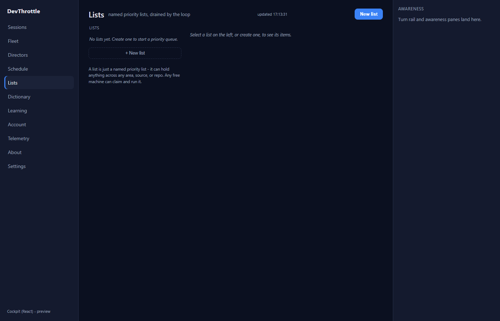

Title: Cockpit React: retire the Blazor Cockpit (cutover) - the final issue of epic #967.
PR: #1016 (branch issue-979-retire-blazor-cockpit, fix commit c74b06cb)
QA identity: independent - own isolated worktree D:\workspaces\devthrottle-wt-979, own release-staged Gateway (Kestrel) on port 8691 with the real React bundle. Developer report NOT trusted; every result reproduced.
Prior QA bounced the PR because with the React Cockpit served at /, a browser hard-navigation (real GET, Accept: text/html) to /lists was served the raw Work-List JSON {"lists":[]} instead of the React Lists page - MapGet("/lists") shadowed the SPA fallback and CockpitReactApp.BrowserPageRoots omitted "lists". The fix adds "lists" to that set.
The Developer claims the complete dual-use set (a React page path that ALSO has a same-path top-level single-segment Gateway JSON MapGet) is exactly {cockpit, sessions, directors, lists}. Independently confirmed by intersecting the two sets from source:
Single-segment top-level MapGet paths (Gateway):
cockpit, comm-queue, devices, directors, events, healthz,
interrupted, launchers, lists, login, logout, m, sessions
React single-segment page paths (apps/cockpit/src/main.tsx):
about, account, cockpit, dictionary, directors, exes, feedback,
fleet, learn, lists, schedule, sessions, telemetry, transcripts, wingman
INTERSECTION = { cockpit, directors, lists, sessions } == BrowserPageRoots
No OTHER page path (fleet, schedule, wingman, dictionary, transcripts, exes, learn, telemetry, account, about, feedback, session) has a colliding same-path top-level JSON MapGet; each already falls through to the SPA shell. The Developer's audit is correct and the set is neither too narrow (would leave a page returning JSON) nor too broad (would shadow nested API paths such as /exes/list, /account/status).
Booted the real GatewayHost (Kestrel) with the release-staged React bundle (built via -p:RunCockpitBuild=true) staged into wwwroot/c. Ran a hard navigation (real GET, Accept: text/html) to every page path, plus an API-client GET (Accept: application/json) to each dual-use path.
| Check | Expected | Actual | Result |
|---|---|---|---|
| GET / (text/html) | React shell | 200 text/html, React shell | PASS |
| GET /lists (text/html) (the fixed case) | React shell, NOT JSON | 200 text/html, React Lists page rendered | PASS |
| GET /cockpit /sessions /directors (text/html) | React shell | 200 text/html shell each | PASS |
| GET /fleet /schedule /wingman /dictionary /transcripts /exes /learn /telemetry /account /about /feedback (text/html) | React shell | 200 text/html shell each (11/11) | PASS |
| GET /session/{id}, /sessions/{id}, /directors/{id} (text/html) | React shell | 200 text/html shell each | PASS |
| GET /cockpit /sessions /directors /lists (application/json) | JSON to API client | 200 application/json each ({"lists":[]}, [], ...) | PASS |
| GET /lists (no Accept, curl/script default) | JSON, not shell | 200 application/json {"lists":[]} | PASS |
19/19 page paths serve the React shell to a browser; 4/4 dual-use paths still serve JSON to an API client. The /lists deep-link renders the full React Lists page (below), not raw JSON.

Hard navigation to /lists on the live Gateway: the React Lists page ("named priority lists, drained by the loop", the left nav rail with Lists highlighted, "No lists yet. Create one to start a priority queue", "+ New list", awareness pane) - not the raw {"lists":[]} JSON of the prior failure.
| Check | Result |
|---|---|
cockpit npm run build (Vite, root-relative /assets/...) | PASS (0 errors) |
npm run lint (eslint) | PASS (0 errors) |
Gateway dotnet build -p:RunCockpitBuild=true (stages wwwroot/c: index.html + assets) | PASS (0/0) |
dotnet build cc-director.sln | PASS (Build succeeded, 0 Warning(s), 0 Error(s)) |
Gateway tests (CcDirector.Gateway.Tests) incl. new BrowserPageRoutes /lists cases | PASS (1277/1277) |
Blazor project src/CcDirector.Cockpit(.Tests) removed; no dangling references (cs/csproj/sln/ps1/yml) | PASS (dirs gone, only a retired-note comment remains) |
React served at root /; deploy side-car packaging includes the React bundle (redeploy-gateway asserts wwwroot/c/index.html) | PASS |
| Pre-existing loopback-guard failure is not newly broken by #1016 | PASS - flags DesktopHostedAiCta.cs + GatewayConfig.cs, neither touched by this PR (pre-existing on main) |
The fix commit's only functional change is one line - BrowserPageRoots gains "lists" - plus a test file and proof artifacts. It touches nothing in the terminal WebSocket proxy, session/roster handling, Brief, turn rail, deploy packaging, or connection-loss logic. The prior QA pass already verified the full live drive-through on this branch (a real session's terminal rendered and typing reached the PTY end to end - echo SLOWMARK987 executed; roster, reply/queue/interrupt, Brief, turn rail render) and the connection-loss recovery. This surgical, strictly-additive routing change carries no regression risk to that surface.
VERIFIED - all acceptance criteria met. Passing (flow:done) and squash-merging PR #1016.